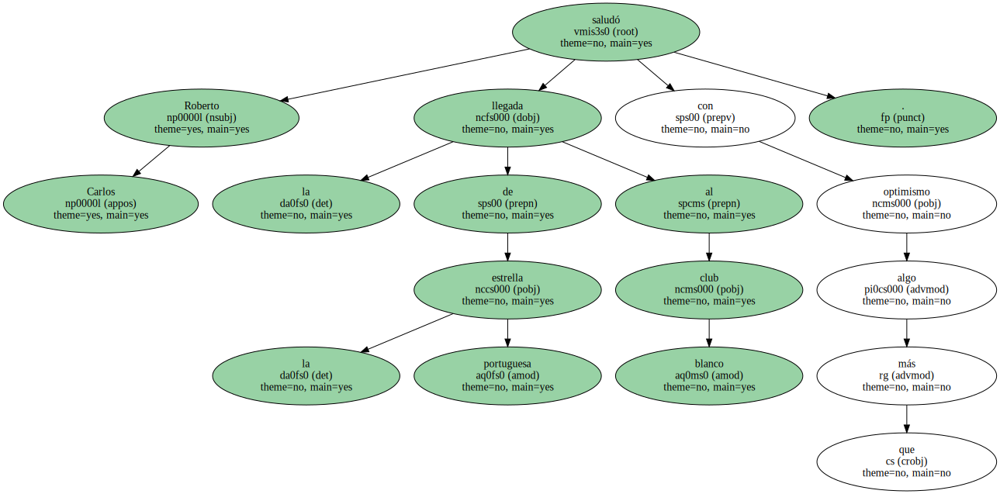
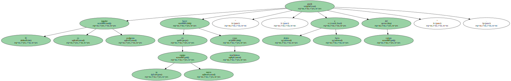
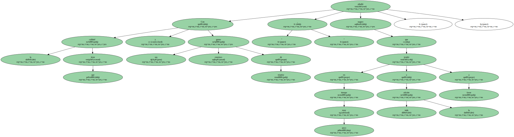
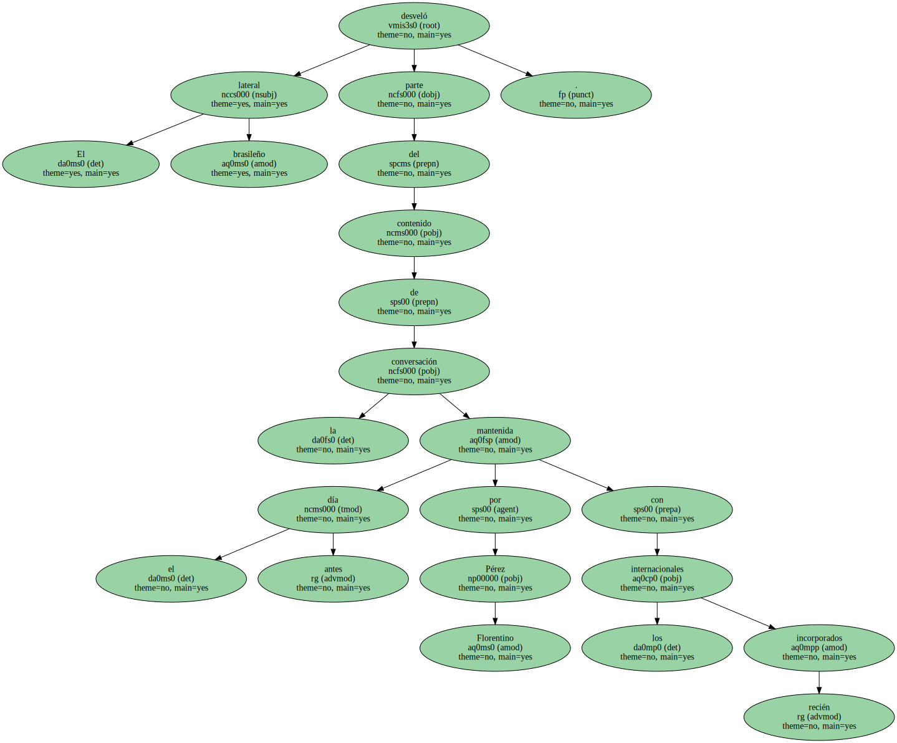
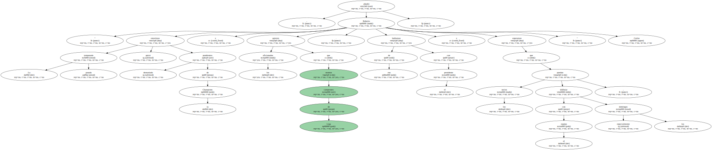
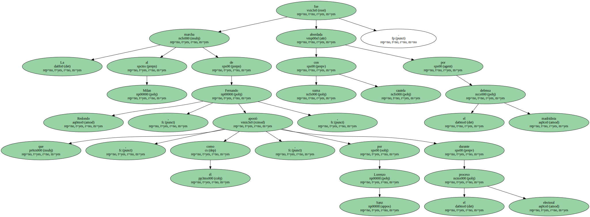
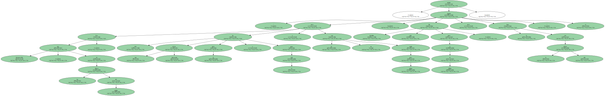
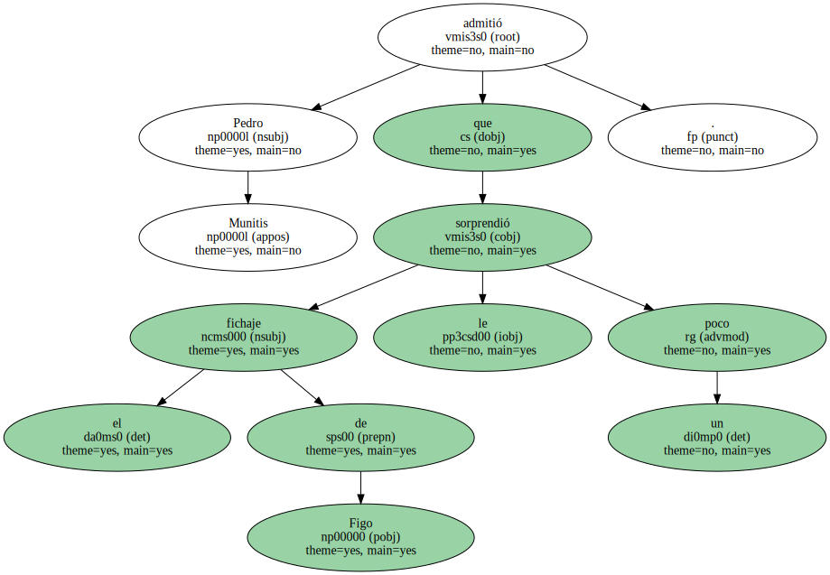
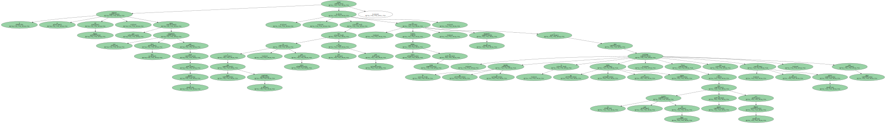

" Mejor tener a Figo aquí que enfrente . Espero que tenga en el Madrid la misma suerte que ha tenido en el Barcelona ".

Roberto Carlos saludó la llegada de la estrella portuguesa al club blanco con algo más que optimismo.
El ex jugador azulgrana puede hacer en su nuevo equipo " muchísimas cosas , dentro y fuera del campo ".
" Con la calidad que tiene y sus enormes ganas de triunfar , seguro que en muy poco tiempo tendrá a toda la afición a favor " , añadió.
El lateral brasileño desveló parte del contenido de la conversación mantenida el día antes por Florentino Pérez con los internacionales recién incorporados.
El presidente blanco les hizo ver la necesidad de alcanzar de una vez la regularidad necesaria para rendir al mismo nivel que en la Copa de Europa en las competiciones españolas.

" La temporada pasada quizá estuvimos demasiado pendientes de la Champions y los aficionados quieren que seamos campeones de Liga . de eso hablamos con el presidente y esperamos que los socios puedan disfrutar con el equipo , especialmente los domingos " , añadió Roberto Carlos.
La marcha al Milan de Fernando Redondo , que , como él , apostó por Lorenzo Sanz durante el proceso electoral , fue abordada con suma cautela por el defensa madridista.
" Era intransferible , uno de los líderes del equipo , pero ha sido una oferta interesante para él y para el club y yo no soy nadie para opinar . Ha decidido salir para ir al Milan , pero lo hace con la cabeza alta " , añadió el jugador.
Pedro Munitis admitió que el fichaje de Figo le sorprendió un poco.
" Ni me lo esperaba , ni me lo dejaba de esperar . Choca que un gran jugador del Barça fiche de repente por el Madrid , pero así es el fútbol " , declaró el ex delantero del Racing , que espera una competencia muy dura para entrar en el equipo : " Jugar va a estar muy complicado , pero no sólo para mí sino para todos . Cuando todos estemos en forma , el entrenador va a tener problemas para elegir ".
